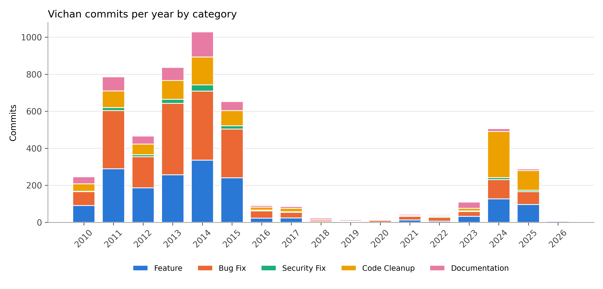
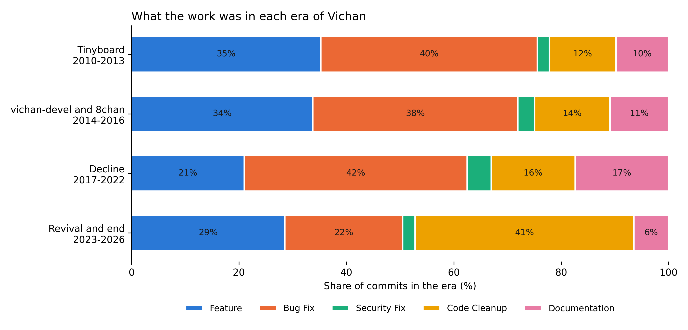
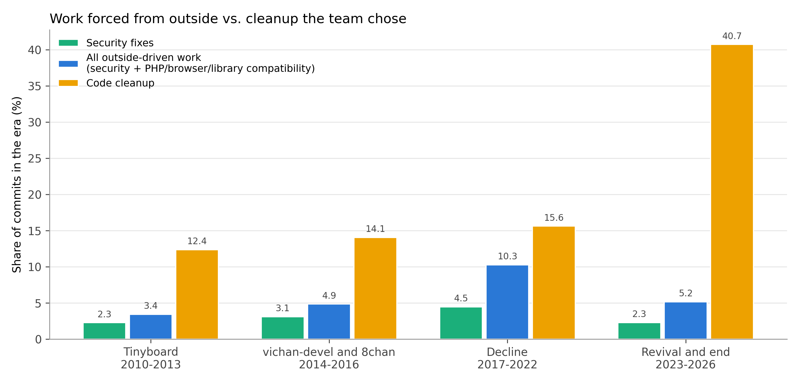

Tristan Lopez, Noah Cash, Jonathan Lange, and Ar-Raniry Ar-Rasyid
COSC 445 Final Report. Repository: https://github.com/jdlange3/COSC445-Final-Project
Vichan is a free, open-source PHP program that people use to run imageboard websites. It started in 2010 as Tinyboard, was forked into vichan in 2014, was the base for the 8chan site, nearly stopped between 2017 and 2022, came back in 2023 and 2024, and in 2026 its maintainers posted an end-of-life notice and archived the repository. In this project we looked at the full history of changes made to Vichan and asked how the work on it changed over that life. We had two questions. First, as the project got older, did the developers stop adding new features and spend most of their time on bug and security fixes? Second, how much of that work was forced on them by outside problems, like newly found security holes or new PHP versions, and how much was the team choosing to clean up its own code?
These questions matter because a lot of open-source software is kept alive by volunteers, and many projects slow down or stop. We usually only see a project at one moment, either while it is growing or after it is gone. Vichan is unusual because its whole life is public, from the first commit to the shutdown notice, so we can see what the work looked like at every stage. Going through thousands of changes by hand would be slow, so we sorted them automatically and then checked how accurate the sorting was. Our objective did not change from the proposal, but the amount of data did, which we explain in the next section.
Our only source was the official Vichan repository on GitHub (https://github.com/vichan-devel/vichan). A Git repository
keeps every saved change to the code, called a commit. Each commit records who wrote it, when, a short message, its parent
commits, and the exact lines that were added or removed. We collected the data by repository mining. Our script
src/extract.py makes a bare clone of the repository with all 27 branches and all tags, then runs
git log three times and writes three CSV files. The clone takes about 30 seconds and Git has no rate limits, so
we did not run into any access restrictions. We did not use the GitHub API, which means pull request discussions and issues
are not in our data.
The data covers November 2, 2010 to July 6, 2026, the date of the last commit and of the archive. The three files are
commits.csv with 9,646 commits (author name and email, author time and time zone, committer, parents, whether
the commit is on the master branch, subject, and body), file_changes.csv with 25,276 rows (one per file changed
by a non-merge commit, with lines added and deleted), and hunks.csv with 65,641 rows. A hunk is one block of
changed code inside a file, and for each one we saved the file, the old and new line ranges, the number of lines added and
removed, and the function heading Git shows. These are exactly the numbers we measured for the proposal, so the extraction
matched our first estimate.
The biggest gap in the data is the "why" behind each change. A commit message is often a few words, and 5% of the commits we kept have messages like "...", "h", or "Update post.php". The repository also only holds what survived. Squashed pull requests, rewritten history, and work that stayed in other forks, such as most of 8chan's later development, are not in it.
Cleaning turned out to be the most important part of the project, because the raw counts were misleading in two ways.
The cleaning script is src/clean.py, and Table 1 shows what each step removed.
| Step | Count |
|---|---|
| Commits extracted from all branches | 9,646 |
| After removing merge commits | 8,396 |
| After removing duplicate copies of the same change on other branches | 5,241 |
| Hunks extracted / hunks belonging to the kept commits | 65,641 / 46,290 |
| Author name and email pairs / developers after combining aliases | 248 / 194 |
Table 1. Effect of each cleaning step.
First, we removed the 1,250 merge commits, since a merge only combines work that is already in the history. Second, and
more surprising, 3,155 of the remaining commits were copies. When a developer rebases or cherry-picks a branch, Git makes a
new commit with a new ID but keeps the original author, author time, and message. Vichan has branches like
infinity (the 8chan code) and several release branches that carry copies of thousands of master commits. We
treated two commits as the same change if they had the same author email, author timestamp, and subject. We kept the copy
on master when there was one and otherwise the earliest one. Without this step, the 2013 to 2015 period would have been
counted almost twice, which would have made the peak years look far bigger than they were. This also removed about 19,000
hunks, so our final record count is 46,290 hunks instead of the 65,000 we estimated in the proposal.
Third, we converted all author times to UTC. Git stores Unix timestamps, so this only needed the offset dropped, but we kept the original time zone in its own column. Fourth, we combined the names and emails that belong to the same person. We linked any two author entries that shared an email or a non-generic name, and followed those links until no more joined (a union-find). We did not link on generic names like "root" or "unknown", and we added two links by hand that the data could not find on its own. This took 248 entries down to 194 developers. The Tinyboard creator appears under ten entries ("Savetheinternet", "Michael Save", "Michael Foster", and others), and Fredrick Brennan appears under ten as well, including "8chan", "ctrlcctrlv", and "copypaste". We used a person's real or best-known name as the label for each group. Without this step, the creator would have looked like several separate contributors, and the 8chan era would have looked like it was run by a bot account named "8chan".
We did not remove any other commits. Empty or vague commits were kept and labeled from their file paths. We kept the email addresses in the cleaned files because they are already public in Git, but our tables and graphs only show developer names.
We sorted each commit into one of five categories: Feature, Bug Fix, Security Fix, Code Cleanup, or Documentation
(translations count as Documentation). We labeled commits instead of single hunks, since a hunk on its own has no message,
and every hunk takes its commit's label. The script src/classify.py works in three steps. First, keyword rules
check the commit subject in a fixed order, so security words like "XSS", "injection", or "vulnerability" win over "fix".
This labeled 1,925 commits. Second, a file rule labels a commit as Documentation if every file it touched is a README,
license, text file, or translation file. This labeled 294 more. Revert commits skip the keywords, because "Revert 'Fix
XSS'" is not a security fix. Third, the 3,022 commits that no rule matched were labeled by an AI language model, Claude
(claude-opus-5-5). The model read each commit's subject, the start of its body, and up to six file paths, and followed the
written category definitions in data/labels/llm_prompt.md. Its answers are saved in
llm_labels.csv, so the rest of the pipeline can run again without calling the model.
We also added a separate flag for work forced from outside, which is how we answer the second question. A commit is flagged if it is a Security Fix or its message mentions outside changes such as a PHP version, a deprecation, a browser by name, or a library or database version. 236 commits were flagged.
To see how much we could trust the labels, src/evaluate.py drew a random sample of 200 commits (seed 445)
and labeled each one again by reading its full message and the actual code diff, which is more information than the
automatic labels had. We then compared the two.
src/analyze.py counts commits and hunks per year and per category. Since years like 2019 have only 14
commits, we also grouped the years into four eras that follow the maintainer timeline in Vichan's README: Tinyboard
(2010 to 2013), vichan-devel and 8chan (2014 to 2016), the decline (2017 to 2022), and the revival and end (2023 to 2026).
For each era we computed the share of commits in each category. Our main measure is the share of commits, not hunks.
We explain why in Section 6.
The automatic labels matched the reference labels on 154 of the 200 sampled commits, or 77%. The file rule was right on all 7 of its commits, the AI labels were right on 79% (103 of 130), and the keyword rules were right on only 70% (44 of 63). The keywords did worse because a word like "fix" shows up in commits that are really features or cleanup. The most common mistakes were cleanup commits labeled as bug fixes (8) and bug fixes labeled as features (7). Security was the category with the clearest pattern: every commit labeled Security Fix really was one (5 of 5), but the labels only found half of the 10 security fixes in the sample. Most of the missed ones had messages that did not sound like security, such as "properly tie auth cookies to private salt". This means our security numbers are a floor, and the real share is probably about twice as high.

Figure 1 shows the project's life after cleaning. Activity peaked in 2014 with 1,028 commits, during the vichan-devel fork and the 8chan period. It then fell off sharply, from 652 commits in 2015 to 91 in 2016 and only 14 in 2019. The revival in 2024 brought it back to 506 commits, mostly from two people, Zankaria (566 commits from 2023 to 2026) and RealAngeleno (215). The project was also very dependent on a few people throughout. Michael Foster alone wrote 34% of all commits, and the top three developers wrote 64%.

| Era | Commits | Feature | Bug Fix | Security Fix | Code Cleanup | Docs |
|---|---|---|---|---|---|---|
| Tinyboard 2010-2013 | 2,335 | 35.2% | 40.3% | 2.3% | 12.4% | 9.8% |
| vichan-devel and 8chan 2014-2016 | 1,771 | 33.8% | 38.2% | 3.1% | 14.1% | 10.9% |
| Decline 2017-2022 | 224 | 21.0% | 41.5% | 4.5% | 15.6% | 17.4% |
| Revival and end 2023-2026 | 911 | 28.5% | 22.0% | 2.3% | 40.7% | 6.5% |
Table 2. Share of commits in each category by era.
The answer to our first question is yes for the decline, but not for the end of the project. Through the first two eras the mix barely changed, with about a third features and about two fifths bug fixes. In the decline, feature work fell from 34% to 21%, and bug fixes, security fixes, and cleanup together rose from 55% to 62% of commits. Documentation also rose, mostly README edits about requirements and maintainers. So while the project was shrinking, the few people still working on it were mainly keeping it running instead of building on it.
The revival broke that pattern. In 2023 to 2026, bug fixes dropped to 22% and code cleanup jumped to 41%, almost three times its earlier share. Reading those commits shows why. The new maintainers spent 2024 and 2025 modernizing old code: splitting the giant functions file, adding dependency injection, removing support for dead caches and old PHP versions, renaming functions, and moving the setup to Docker. Feature work also came back up to 29%, with things like a new search system, new captcha options, and a mobile layout. The project did not end in a slow slide of fixes. It ended right after a large planned rebuild, and the README gives outside reasons for stopping instead.

Figure 3 compares work forced from outside with cleanup the team chose. Security fixes were never a large share of commits. They peaked at 4.5% in the decline, and even doubling that for the labels we missed keeps them under 10%. The wider outside-driven measure, which adds compatibility work for new PHP, browser, and library versions, peaked at 10.3% during the decline. That fits what we see in the commits from those years, which include several rounds of PHP 7 and PHP 8 fixes just to keep the software running. In every era, cleanup the team chose was larger than outside-driven work, and in the final era it was about eight times larger (40.7% against 5.2%). So most of Vichan's maintenance came from the developers' own choices, not from outside pressure, and outside pressure mattered most when the project had the fewest people.
The biggest limitation is label accuracy. At 77%, about one commit in four is in the wrong category, so small differences between eras should not be trusted. The large changes we describe, such as cleanup going from about 15% to 41%, are much bigger than that error, but the security numbers are clearly too low. Second, the decline era has only 224 commits, so one person's habits can move its shares a lot. Third, a commit is not a unit of effort. A one-line typo fix and a thousand-line rewrite each count as one, and developers had very different habits, with some making many tiny commits.
We first planned to count hunks instead of commits, but the hunk counts turned out to be dominated by files that are not really the team's code. In the 2014 to 2016 era, 26,157 of the 33,221 hunks are in translation files that were synced from an outside translation site, and bundled libraries like Twig make up much of the rest. Across the whole project, 66% of hunks are in translation or library files. If we had used hunks, the second era would look like it was 75% documentation. This is why our results use commits, and the hunk tables in the repository should be read with that in mind.
Finally, our "outside-driven" flag only comes from keywords in the message, so it misses compatibility work with vague messages, and our eras are based on the maintainer list in the README, which is itself a record the project wrote about itself. The repository also cannot tell us about work that was squashed, lost in forks, or done on private servers, so everything here describes the history that survived, not everything that happened.
If we continued, the first step would be to improve the security labels, since that is where the automatic labels were weakest. Giving the AI model the code diff and not only the message would probably catch the security fixes that our sample showed it missed. We would also add a second data source, GitHub issues and pull requests, to recover the reasons behind changes, and the National Vulnerability Database, to check whether security fixes followed public reports. Last, we would compare Vichan with other imageboard engines or other volunteer projects that ended, to see if the same pattern of a quiet decline followed by a cleanup push shows up elsewhere.
Jonathan Lange set up the team repository, wrote the first analysis script used for the progress check-in, and wrote the data collection script. Tristan Lopez worked on cleaning, including removing merge commits and branch duplicates and combining developer aliases. Ar-Raniry Ar-Rasyid built the sorting process and ran the accuracy check against the reference sample. Noah Cash made the graphs and led the writing of the report. All four members reviewed the results and the final report.